what is Process ?
Process is the running instance of the program. It carries out the task within the Operating System.
State of the process
Running: The process is running or is getting ready to run. Waiting: The process is waiting for some event or resources, held by other. Stopped: The process is stopped, has finished the taask Zombie:This is halted process, more likely dead process
Commands to manage the process in linux top, ps , htop, nice, renice
top
Top provides an ongoing look at processor activity in real time
top
List the Process sorting by memory utilization
# top shift + m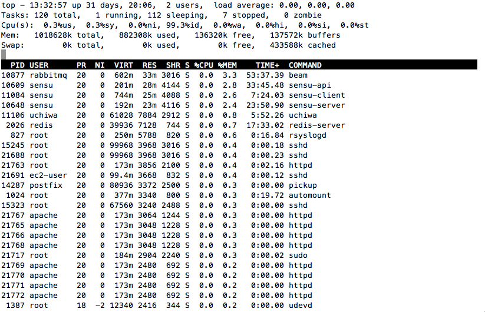
top
List the Process in sorting by cpu utilization
# top shift + p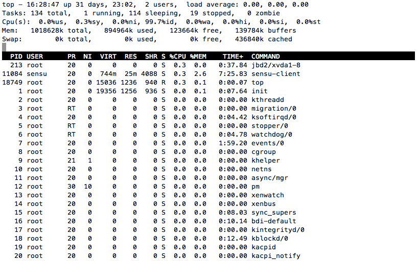
top
Sort field via field letter, for example press ‘n‘ letter to sort process by memory.
# top shft + o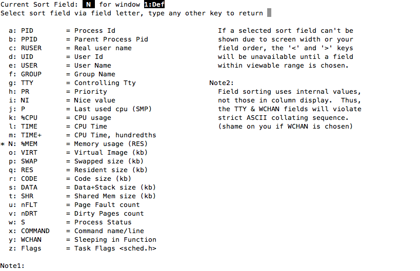
top
List all the process by used by particular user
# top top -u username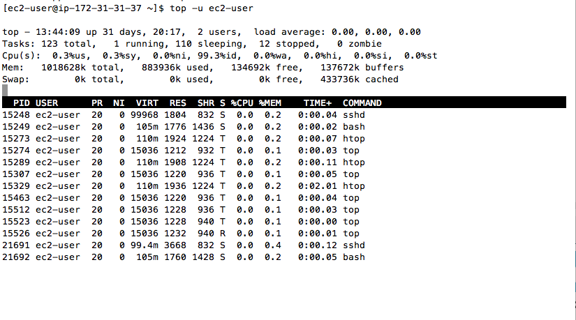
top followed by character c
Displays the absolute path of the process
# top c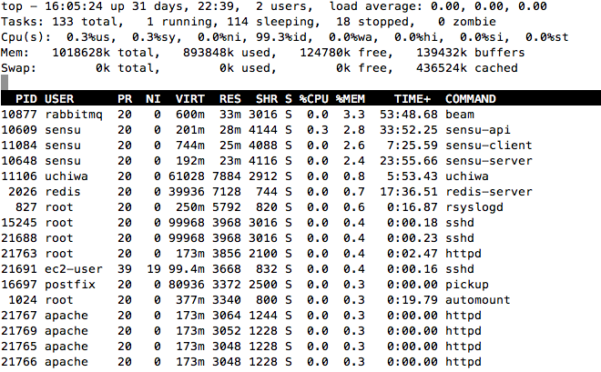
Change After pressing c
Displays the absolute path of the process
# top c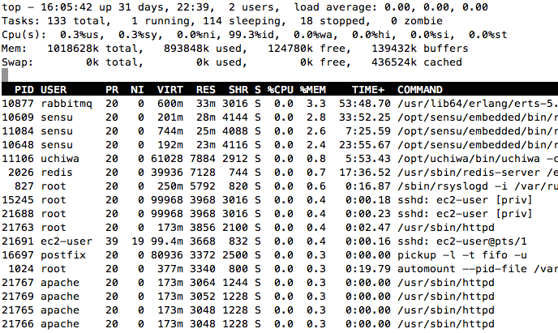
top
Renice a Process
Set the priority of the process
# top r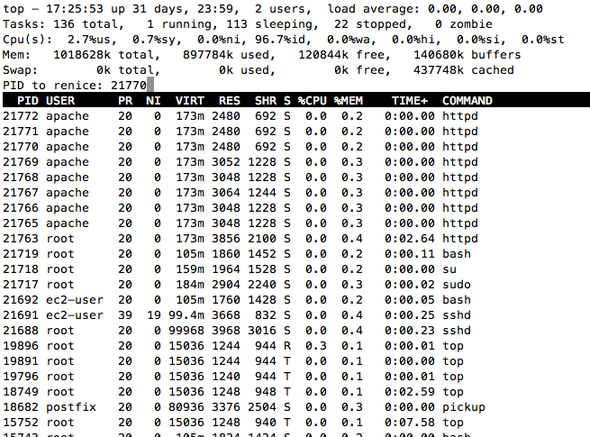
top
I entered the pid 21770, and it asked me the Renice PID 21770 to value:
Renice PID 21770 to value: 1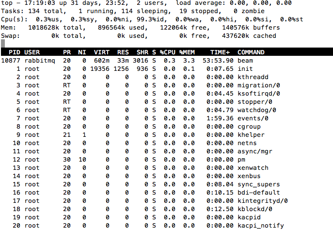
For pid 21770, NI was initially was , and we changed it to 1.
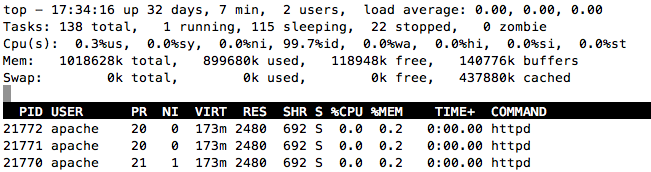top
Kill a Process
# top k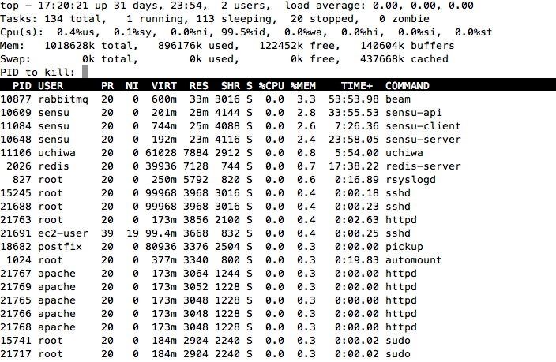
Exit top command after certain loop
With below command top command will automatically exit after 5 number of repetition.
# top -n 5
Its just the updated version of top command, and more easy to use as well.
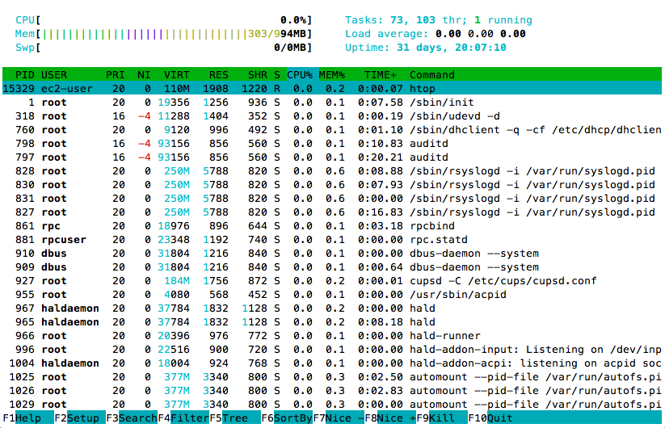ps gives you a single snapshot of the process, where as top gives you constant update of the running process,listing by the criteria you select. Another Big difference will be, PS to get more detailed information about a single process/thread, where top is more of a "summary" of what is running and the resources it is using.
ps aux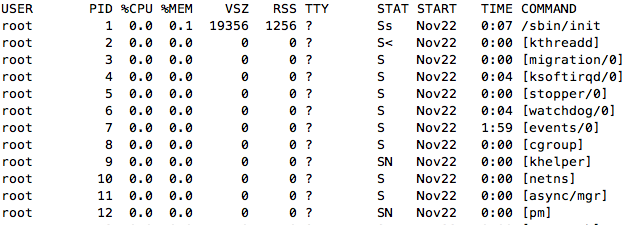
process listing
ps -ef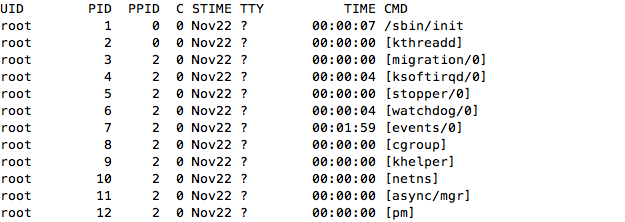
Find out the more detail information of indiviudal process
ps aux | grep http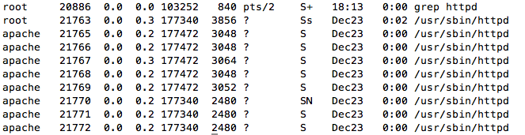
Understanding the field
user : user related to the process
pid : process Id used by each process
pri: Priority of the process
ni : nice value
%cpu :cpu utilized by the process
%mem : Memory used by the processs
vsz :virtual memory usage of entire process
rss :real memory usage
tyy: Terminal associated with the process
start: The day the process was started
Time : duration the process has ran for
Nice
Nice command in Linux can set process priority. If you give a process a higher priority, then Kernel will allocate more cpu time to that process.Initially all the processs by default, get launched with the priority of 0.
Command to find the priority of the process
ps al or can use top command as well. 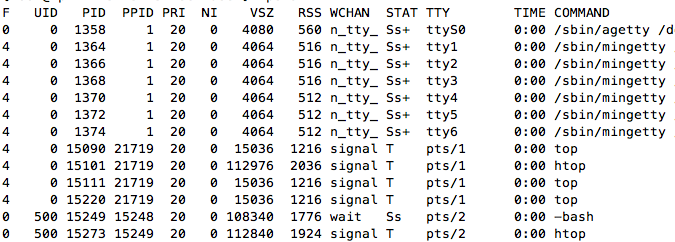[tomuser@mac ~]# nice 0
nice command without argument checks the priority of the terminal.
Process priority values range from -20 to 19, -20 being on the higher rank, and 19 is consider to be low.
nice --10 commandname
First hifen sign is for command, and the other one is for negative value
nice --10 top &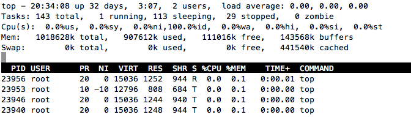
Renice
Renice command in Linux changes the priority of running process.
renice -10 -p 3
This will change the priority of process with pid 3 to -10
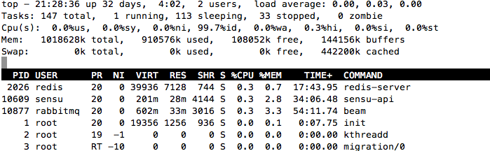renice -10 -p 12345 -u ec2-user
This will change the priority of process with pid 12345 to -10, and all the process asociated with ec2-user.
[root@ip-172-31-31-37 ec2-user]# renice -3 -p 4 -u ec2-user 4: old priority 0, new priority -3 500: old priority 0, new priority -3
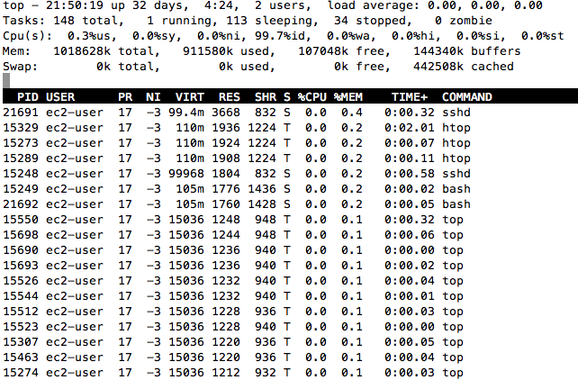Running the process in background and foreground
will display the process information
# top
will run the process in the background, and we will be able to do someother task
# top &
Command to see the jobs running in the background
jobs -l
To bring the job in the foreground
fg %no
To send the job back to the background
bg n
We can also use screen application
Killing the running process
Killing the process with the pid
kill PID
Killing the process gracefully
kill -9 PID
killing the process forcefully
kill -15 PID
Killing the process by its name
killall process-Name
Killing the process gracefully by there name
killall -9 process-Namee
killing the process forcefully by processname
killall -15 process-Name
Killing the multiple process at a time
kill pid1 pid2 pid3